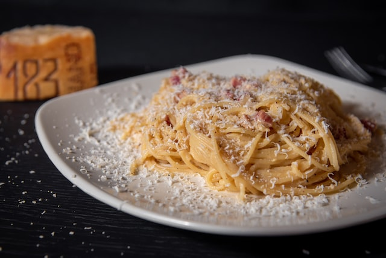
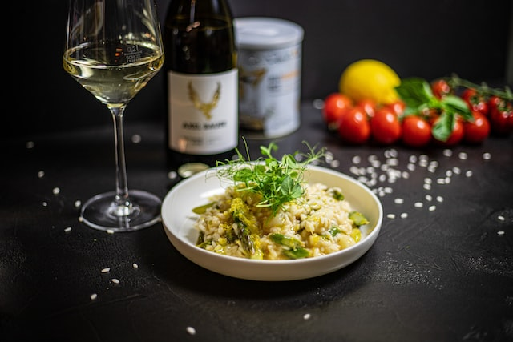
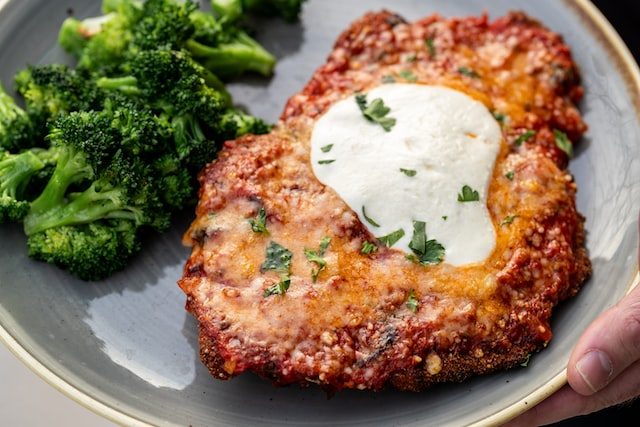

Paterro's Kitchen is an Italian restaurant that offers a warm and inviting atmosphere for diners to enjoy a delicious meal. The menu features traditional Italian dishes made with fresh ingredients and cooked to perfection. Standout menu items include homemade pasta dishes, wood-fired pizzas, and mouth-watering seafood options.
Our Main Dishes
| Name | Description | Price |
|---|---|---|
| Spaghetti Carbonara | Spaghetti pasta tossed with a sauce made of eggs, cheese, bacon, and black pepper. | 18.00 |
| Risotto ai Funghi | Risotto made with Arborio rice, mushroom, butter, onion, and Parmesan cheese. | 20.00 |
| Ossobuco alla Milanese | A classic Milanese dish of braised veal shanks in a rich tomato-based sauce. | 25.00 |
| Saltimbocca alla Romana | A Roman dish made of veal escalope, sage and prosciutto. | 22.00 |
| Pollo alla Parmigiana | Breaded chicken breast topped with marinara sauce, mozzarella and parmesan cheese. | 20.00 |


